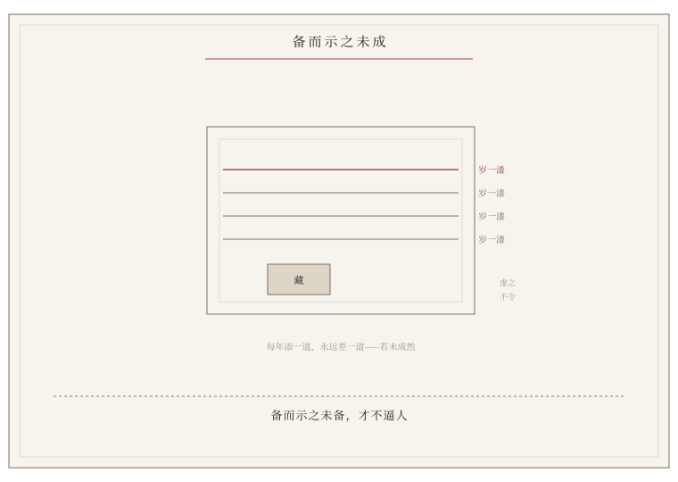

檀弓上 · 三·一百零二 · 第 305 课
君即位而为椑，岁壹漆之，藏焉。
说什么事：诸侯一即位，就为自己造一具椑（内棺）；此后每年漆一遍；棺中藏物，不教它空着。
落在哪一层：备物于早。论「示如未成，虚之不令」。
为何编在此位：上一课论「池视重霤」，是象生；此课论「即位为椑」，是备死。一象一备，皆在人事之外。
【经】君即位而為椑，歲壹漆之，藏焉。
【注】椑謂杝棺親尸者。椑，堅著之言也。言天子椑內又有水兕革棺。歲壹漆之，若未成然。藏焉，虛之不令。
【疏】此一节论人君尊，即位得为棺之事。「君」，诸侯也，言诸侯则王可知也。椑，杝棺也。漆之坚强，甓甓然也。人君无论少长，而体尊备物，故亦即位而造为此棺也。椑谓杝棺亲尸者也，古者天子椑内有水兕，而诸侯无，但用杝在内以亲尸也。「岁一漆之」者，虽为尊得造，交未供用，故不欲即成，但每年一漆，示如未成也；唯云漆杝，则知不漆杝棺外属等。「藏焉」者，棺中不欲空虚，如急有待也；虚之不令也。令，善也，言若虚空便为不善，故藏物于其中。一本为「虚之不合」者，谓不以盖合覆其上，既不合覆，不欲令人见，故藏焉。
即位 就诸侯之位。此指初即位之年，非死后。
椑 内棺，注「杝棺亲尸者」。杝，木名，木质细而耐朽；椑取其坚著。
岁壹漆之 每年漆一次。壹，一。
藏焉 在其中藏物。焉，于此。
虚之不令 让它空着不好。令，善。
甓甓然 疏语，形容漆后坚实之貌。甓，砖。
水兕 水牛与兕牛之革。天子椑内以此革为棺被。
诸侯即位之时就造一具椑，此后每年漆一遍，并在其中藏上东西。
此节写一件极不合常情的事：一个刚即位的人，第一件大事之一，是给自己做棺材。
注疏把理由说得很清楚：人君「体尊备物」——位尊，故所备之物须早。这不是咒他早死，是制度的一部分：天子的棺有四重，诸侯三重，造办需时、需材、需漆，若临时再办，必不能如制。所以即位即造。
第二层是「岁壹漆之」。注四字「若未成然」——每年漆一遍，看起来像还没做完。疏解释得更细：虽为尊者得造，但「交未供用」，即尚未交货使用，所以不欲即成。这个「不欲即成」极妙：一具棺，做成了却不肯让它「算做成」，每年添一道漆，永远差一道。
为什么要这样？因为一具「做成的棺」摆在宫里，是催促；一具「还差一遍漆的棺」，是预备。同样的东西，差一道漆，意义就变了。这是礼在心理上的一层精细处理：把必至之事，做成未至之状。
第三层「藏焉」。棺中不教它空着，藏上东西。注说「如急有待也」——好像随时要等着用。疏补一句「虚之不令」：空着不好。另有一本作「虚之不合」，说是不把盖合上，不欲令人见，故藏物其中。
两说都通：一是怕空，一是怕见。合起来看，都是不肯让这具棺「赤裸裸地空着等」。
第一层 预办与「耻具」之别 前批 273 节「丧具，君子耻具」——棺椁衣衾之类，不到死不肯备齐。此节却明说即位即造椑。两者看似矛盾，其实分得很清：273 所耻者是「丧具全备」，即一套随时可用的丧事；此节所备者只是一具内棺，且「岁一漆之，若未成然」、「藏焉」，处处不让它成为「完备」。
礼的分寸正在这里：该早办的早办，但早办的东西必须保留「未完成」的形态。备而示之未备，才不逼人。
第二层 「岁一漆」的时间感 每年一道漆，是一个人余年里的节拍。新君即位，第一年漆一遍；第二年再一遍；如此十年、二十年。这道漆不是工序，是记年：一年过去，棺上多一层。对国君而言，这大约是宫里最沉默的一件年历。
礼家不点破这一层，只写「岁壹漆之」。而「若未成然」四字，已把这层意思托出来了。
第三层 天子与诸侯之别 注说天子椑内又有水兕革棺，诸侯无。疏申之：诸侯「但用杝在内以亲尸」。此即 304 所说「各视生时」的同一原则——以位定数，不多一分。诸侯不敢用天子之革，这不是谦，是界。
第四层 「虚之不令」的两种读法 读作「空着不好」，是就心理说；读作「不把盖合上」，是就制度说。前者近乎人情，后者近乎忌讳。礼书在此不作定断，把两读都留着。读者当知：礼的许多条文，其义不在一条，而在一处含混里。
与今日何干 今人也有早备之物：遗嘱、寿穴、寿材。此节给的尺是：可以早备，但备好的东西须留一处「未成」——不必年年漆一遍，但不必让它日日逼在眼前。备而示之未备，是给人的余地。
| 左 | 右 |
|---|---|
| 君即位 | 初立之年 |
| 而为椑 | 一具内棺 |
| 体尊备物 | 备之由 |
| 岁壹漆之 | 一年一道 |
| 若未成然 | 不肯算成 |
| 藏焉 | 不使空 |
| 虚之不令 | 两读 |
| 天子加革 | 位不同则数不同 |
画一处宫室之内的偏室，视点平视。室中横置一具内棺（只画棺形与四边，不画盖），棺身素木色，上有数道深浅不一的横纹（示意每年一漆）。棺内底部放着两三件寻常之物（一只木匣、一束帛）。棺之一端立着一位深衣之人（正面、右手抚棺沿），一端另立一位执漆器的小吏（背向观者、手持一柄漆刷）。不写文字、不画人面细节。赭色只用在棺身最上一道横纹，与漆器中的漆面。
